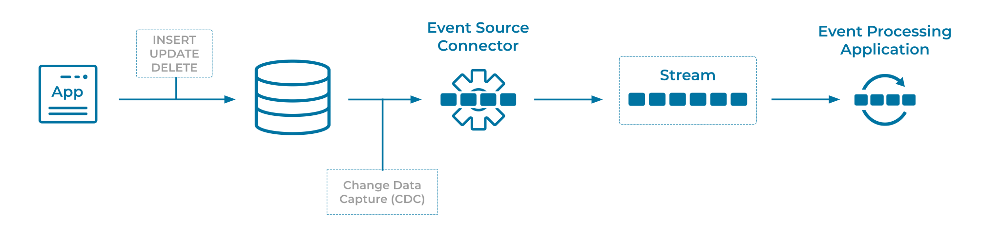

Database Write Through
For architectural or legacy purposes, data-centric applications may write directly to a database. Event Processing Applications will need to reliably consume data from these systems using Events on Event Streams.
Problem
How do we update a value in a database and create an associated Event with at-least-once guarantees?
Solution

Some applications write directly to a database table, therefore the database table is the Event Source. We can deploy a Change Data Capture (CDC) solution to continuously capture writes (inserts, updates, deletes) to that database table and produce them as Events onto an Event Stream. The events in stream can then be consumed by Event Processing Applications. Additionally, the Event Stream can be read into a Projection Table, for example with ksqlDB, so that it can be queried by other applications.
Implementation
Kafka connectors provide the ability to scalably and reliably move data between Apache Kafka® and other data systems. There are many types of connectors that can connect to many types of databases. For example, using the JDBC Source connector for Kafka Connect allows for streaming of changes from a source database to Kafka topics.
{
"connector.class": "MySqlCdcSource",
"name": "MySqlCdcSourceConnector_0",
"kafka.api.key": "****************",
"kafka.api.secret": "******************************",
"database.hostname": "database-2.<host-ID>.us-west-2.rds.amazonaws.com",
"database.port": "3306",
"database.user": "admin",
"database.password": "**********",
"database.server.name": "mysql",
"database.whitelist": "employee",
"table.includelist":"employees.departments",
"snapshot.mode": "initial",
"output.data.format": "AVRO",
"tasks.max": "1"
}
The above shows an example configuration to deploy a MySQL Source CDC Connector (Debezium) streaming data from a MySQL database to Kafka topics. The configuration determines the database to connect to (database.hostname) along with the database elements to source into Kafka (table.includelist). The output.data.format configuration instructs Kafka Connect which format to use when writing records (in this case the Apache Avro format).
Confluent Cloud CLI can deploy a connector on the command line from a configuration, for example:
ccloud connector create --config <connector-config-file.json>
Considerations
- This pattern is a specialization of the Event Source Connector that guarantees that all state changes represented in an Event Source are captured in an Event Streaming Platform.
- The processing guarantees (cf. "Guaranteed Delivery") to choose from — e.g., at-least-once, exactly-once — for the CDC data flow depend on the CDC and Database technology utilized.
- There is a certain delay until changes in the source database table are available in the CDC-ingested event stream. The amount of the delay depends on a variety of factors, including the features and configuration of the Event Source Connector. In many typical scenarios the delay is less than a few seconds.
- Events typically require the row key to be used as the Kafka event key (aka record/message key), which is the only way to ensure all Events for the same DB table row go to the same Kafka topic-partition and are thus totally ordered. They also typically model deletes as tombstone events, i.e. an event with a non-null key and a null value. By ensuring totally ordered events for each row, consumers see an eventually-consistent representation of these events for each row.
References
- See Oracle CDC Source Connector for details of a premium CDC connector for Oracle DB.
- See Integrate External Systems to Kafka on Confluent documentation for information on source connectors.
- Kafka Connect Deep Dive - JDBC Source Connector blog post
- See Database Write Aside for an alternative example of writing database changes to an Event Stream
- No More Silos: Integrating Databases and Apache Kafka blog post by Robin Moffatt